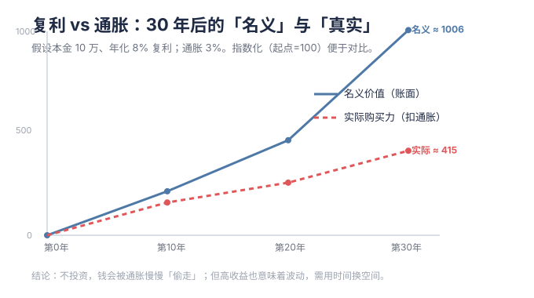

Rule No. 1: Never lose money. Rule No. 2: Never forget rule No. 1.
💡 本章为什么重要：本章先给你泼一盆冷水：理财不是暴富，而是先守住本金、跑赢通胀。巴菲特的第一条规则，正是本章的底层逻辑。
M00 · 启航：为什么理财，以及如何不踩坑
学习目标：搞懂"理财到底解决什么问题"，建立三条保命原则，识别最常见的坑。 预计用时：40 分钟 + 本周行动清单。
一、先泼冷水：理财不是"暴富"
很多人冲进理财是想着"钱生钱、早日财务自由"。但现实是：
- 理财的第一目标不是赚最多，而是不亏大钱 + 让钱不被通胀吃掉。
- 真正能"复利起飞"的，是时间长 + 稳定不中断，不是某次押对。
- 金融市场专治各种"我很聪明"。杠杆、内幕、短线暴富故事，幸存者偏差极大。
记住一句话：你赚的每一分钱，都是认知的变现；你亏的每一分钱，都是认知的缺陷。
二、两把剪刀：复利 vs 通胀
理财的意义，用一个对比就懂。
1) 复利：世界第八大奇迹
本金 10 万，年化 8%： - 10 年后 ≈ 21.6 万（翻 1 倍多） - 20 年后 ≈ 46.6 万（翻 4.6 倍） - 30 年后 ≈ 100.6 万（翻 10 倍）
关键是时间。越早开始，曲线越陡。仓库工具一键算：
python tools/compound_interest.py --principal 100000 --years 30 --rate 0.08
2) 通胀：看不见的小偷
假设通胀 3%/年，今天的 100 元，30 年后购买力只剩约 100 ÷ (1.03³⁰) ≈ 41 元。 也就是说，钱躺在活期里，每年都在被动变穷。
复利让你"往前跑"，通胀在"往后拽"。理财，就是让前者稳稳跑赢后者。 跑通胀≈需要 3%–4% 年化；要真正增值，目标通常 6%–10%（伴随更大波动）。
3) 72 法则（心算神器）
本金翻倍需要的年数 ≈ 72 ÷ 年化收益率(%) - 8% 年化 → 约 9 年翻倍 - 12% 年化 → 约 6 年翻倍 - 通胀 3% → 约 24 年购买力腰斩

三、买任何东西前，先想三件事
这是全教程最重要的三问，写下来贴在屏幕上：
- 这笔钱多久不用？（期限决定你能不能承受波动）
- 亏多少我会睡不着？（风险承受能力，不是"想赚多少"）
- 我为什么要买它、什么情况下卖？（没有卖出计划 = 没有计划）
对应概念卡见 资产配置、风险承受能力与风险偏好、通胀、复利。
四、三条保命原则
- 先保障，后投资：应急金（3–6 个月支出）+ 必要保险没到位前，别谈高波动投资。
- 不懂不投：朋友说"长期持有稳赚"就跟着买，是最大的坑（见 M03 真实案例）。
- 分散 + 纪律：单一资产再好也别 all in；用定投和再平衡代替"感觉"。
五、新手最常见的 6 个坑
| 坑 | 真相 |
|---|---|
| 跟着朋友/大V 买，没研究 | 他亏得起、你未必；他卖出你不知道 |
| 把基金当股票短线炒 | 基金费用高、波动慢，不适合日内 |
| 只看收益率不看回撤 | 一年涨 50% 但可能先跌 40%，你拿不住 |
| 用杠杆 / 借钱炒股 | 波动会放大到强行平仓，归零 |
| 迷信"保本高收益" | 收益和风险永远挂钩，反常即骗局 |
| 追涨杀跌 | 高点冲进去、低点割肉，完美反向操作 |
六、本周行动清单 ✅
- [ ] 用工具算一次自己的"复利曲线"（代入真实可投金额）
- [ ] 盘点：活期 + 货基够不够 3–6 个月支出？不够先补
- [ ] 写一句：账户浮亏 ___% 你会睡不着？（你的风险红线）
- [ ] 把你已买的每个产品，用"三问"过一遍，记下来
七、下一步
→ M01 资产地图与工具箱：钱到底能去哪些地方，各自的收益/风险/流动性长啥样。
🌐 English Abstract
Topic: Why we invest at all — and how to avoid the most common traps.
Key takeaways: - The first goal of investing is not to lose big and to outrun inflation — not to get rich quick. - Compound interest rewards time + consistency; the Rule of 72 lets you estimate doubling time in your head (72 ÷ annual %). - Before buying anything, ask three questions: time horizon / max loss you can sleep through / why-buy-and-when-to-sell. - Three life-saving rules: insure first, never invest in what you don't understand, diversify + follow discipline.
Why it matters: Sets the right mindset so you don't become the market's tuition. Most people lose money before they start, by chasing stories instead of building understanding.